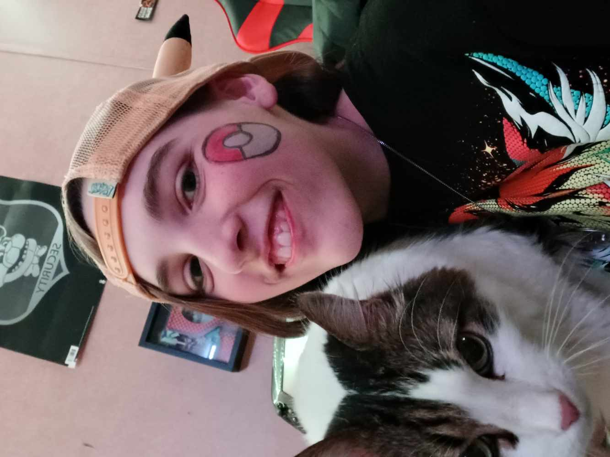

About Me
I'm a recent High School graduate determined to learn more about computer software and how it functions. I have an unhealthy obsession for pasta and crawfish, especially if they're combined. I have a cat named Caesar (as seen to the right) and he also has an unhealthy obsession for food. I wish to make video games someday and I am a huge fan of old, retro-like games like Pokemon (my favorite being Pokemon Mystery Dungeon: Sky made in 2009), Mario (my favorite being Super Mario Bros 3 made in 1988), Sonic (my favorite being the first Sonic Adventure in the series, which was also released in 1988), and more. I am also heavily inspired by the GameBoy and DS (mostly the GameBoy Advance SP and the DS Lite, which I own both momentarily) and hope to expand my knowledge of how that certain hardware works. My favorite color is orange but I hate the flavor of orange (how shocking). I really enjoy fall or winter, which has both of my favorite holidays; Halloween and Christmas.
United States

"The United States of America (USA), commonly known as the United States (U.S.) or America, is a country primarily located in North America. The country has the world's third-largest land area,[d] largest exclusive economic zone, and third-largest population, exceeding 334 million.[k] Its three largest metropolitan areas are New York, Los Angeles, and Chicago, and its three most populous states are California, Texas, and Florida." (USA Wiki)